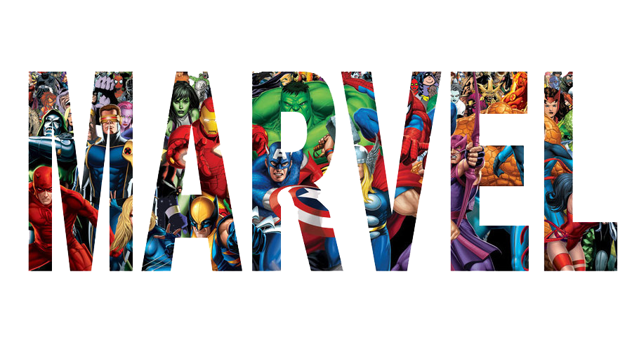
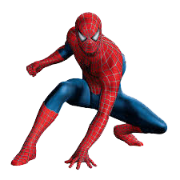
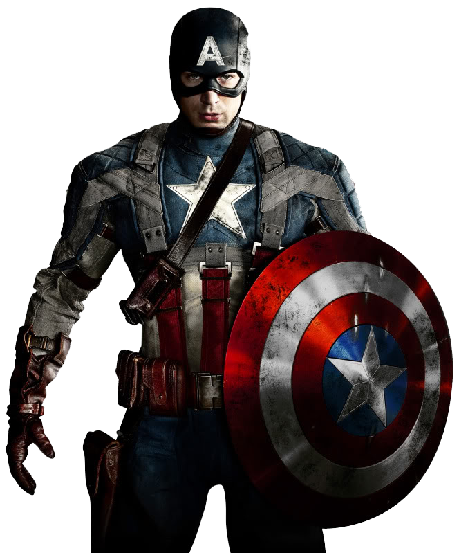
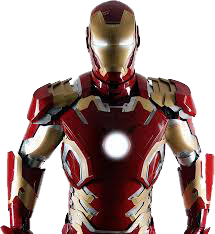
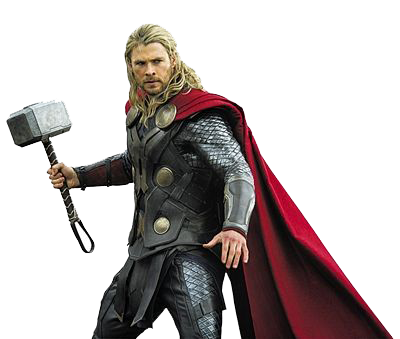

Eroii MARVEL
|  | SpiderManBitten by a radioactive spider, high school student Peter Parker gained the speed, strength and powers of a spider. Adopting the name Spider-Man, Peter hoped to start a career using his new abilities. Taught that with great power comes great responsibility, Spidey has vowed to use his powers to help people. |
|  | Captain AmericaVowing to serve his country any way he could, young Steve Rogers took the super soldier serum to become America's one-man army. Fighting for the red, white and blue for over 60 years, Captain America is the living, breathing symbol of freedom and liberty. |
|  | Iron ManWounded, captured and forced to build a weapon by his enemies, billionaire industrialist Tony Stark instead created an advanced suit of armor to save his life and escape captivity. Now with a new outlook on life, Tony uses his money and intelligence to make the world a safer, better place as Iron Man. |
 | Hulk"They have an army we have a Hulk." |
|  | ThorAs the Norse God of thunder and lightning, Thor wields one of the greatest weapons ever made, the enchanted hammer Mjolnir. While others have described Thor as an over-muscled, oafish imbecile, he's quite smart and compassionate. He's self-assured, and he would never, ever stop fighting for a worthwhile cause. |